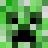

Odeberte vzorek
Přistupte k davu v Minecraftu a pomocí injekční stříkačky odeberte vzorek.
Minecraft Java Edition / Předběžný přístup 0.2
Prozkoumejte 12 kmenů, postavte laboratoř a přijměte schopnosti a slabosti stvoření z Minecraftu.

Hratelnost
Přistupte k davu v Minecraftu a pomocí injekční stříkačky odeberte vzorek.
Použijte Sequencer k odemknutí silnějších sér. Stisknutím G otevřete Gene Tree.
Zpracujte jej v centrifuze, abyste získali purifikovaný genom.
Zkombinujte genom, mutagenní bázi a katalyzátor v syntetizátoru.
Transformace
Objeví se první pasivní rys.
Náplasti davu se rozšířily po vaší kůži.
Vaše tělo začíná měnit tvar.
Létající kmeny získávají let. Bezúchytkové formuláře ztrácejí na ruce.
Berete podobu davu. Změna přestane chátrat.
Váš pokrok se může mezi dávkami snižovat. Jakmile dosáhnete plné formy, použijte zpětné sérum.
Katalog kmenů
Otevřete kmen, abyste viděli jednu z jeho silných a slabých stránek.
Síla Regeneruje se ve tmě
Slabost Hoří na slunci
Síla Silnější šípy
Slabost Zranitelnější vůči výbuchům

CreeperSíla Odolává výbuchům
Slabost Panika u koček
Síla Lezení po stěnách
Slabost Utrpí větší poškození ohněm
Strength Kroky přes celé bloky
Slabost Bolí voda a déšť
Síla Dýchá pod vodou
Slabost Pomalá na zemi
Síla Letí z fáze IV
Slabost Voda to uzemňuje
Síla Rychlý let z fáze IV
Slabost Hoří na slunci
Síla Urychluje růst plodin
Slabost Jí pouze sladká jídla
Síla Rychlejší pohyb a silnější záběry
Slabost Jí pouze maso
Síla Přijímáno prasaty bez zlatého brnění
Slabost Nelze zahodit zlaté předměty
Síla Podvodní vidění a obranné hroty
Slabost Na zemi dochází vzduch ze IV.
Minecraft 1.21.1
mods.Pehkui je volitelný pro škálování těla.